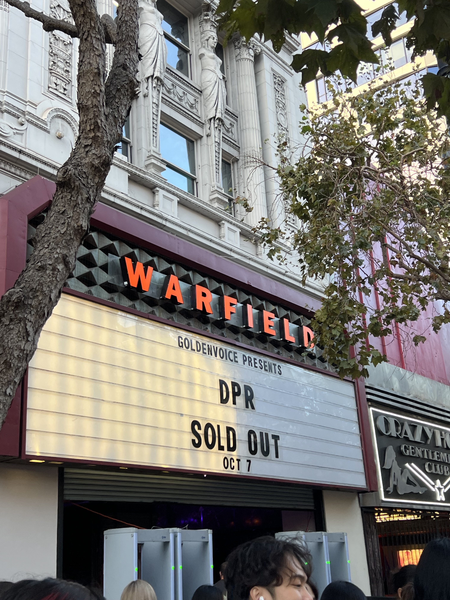

ABOUT ME
Hi! I'm Kerry and I'm currently a junior majoring in Data Science and Economics at UC Berkeley.
Because of my interests in data science and storytelling, I am passionate about learning
more about audiences, sharing meaningful stories and experiences, marketing, and technology.
In my free time, I love going to concerts, playing at the beach, and writing!
Currently, I am open to roles in marketing, data science, or product management.
Please feel free to reach me at kerrywong@berkeley.edu
